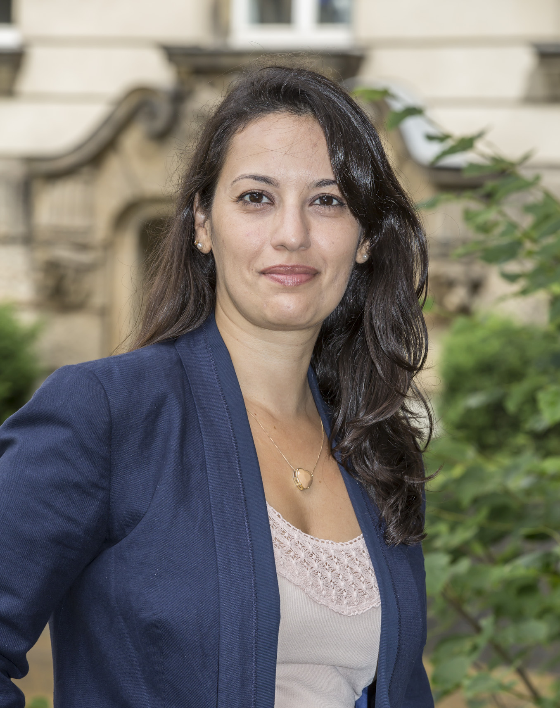

Línguas Estrangeiras Aplicadas às Negociações Internacionais
Universidade Federal da Paraíba (UFPB)
Conheça a rede de professores, alunos e parcerias que tornam o LEA-MSI um ambiente colaborativo, multicultural e conectado.
Lista de professores do LEA-MSI com links para o currículo Lattes.

Professora Adjunta de Língua Alemã no Departamento de Línguas Estrangeiras e Tradução da Universidade de Brasília. Doutora em Linguística Aplicada pela UFMG, com período sanduíche na Europa-Universität Viadrina Frankfurt/Oder (bolsa CAPES/DAAD), mestre em Estudos Linguísticos pela UFMG e especialista em Teoria e Prática do Ensino de Alemão como Língua Estrangeira pela UFBA e Universität zu Kassel. Possui Bacharelado em Letras pela UFMG, com habilitação em Alemão e Inglês. Pesquisa a multimodalidade na interação face a face e nas interações mediadas pela tecnologia, a partir das perspectivas cognitiva, interacional e intercultural, na interface entre Linguística Cognitiva, Semiótica Social e Estudos dos Gestos.Já foi coordenadora administrativa do Programa Idiomas sem Fronteiras na UnB (2024-2026) e coordenadora pedagógica do curso de alemão no PPE UnB Idiomas (2024-2025). Desde 2023 é especialista em língua alemã credenciada à Rede Andifes-IsF, coordenando os cursos desse idioma na UnB e desenvolvendo componentes curriculares para o curso de Especialização em Língua Alemã da Rede. Atua também como coordenadora regional da Associação de Professores de Alemão do Centro-Oeste e membro da diretoria da Associação Brasileira de Professores de Alemão (BraDLV).
Universidade Federal da Paraíba (UFPB)
Universidade Estadual de Santa Cruz (UESC)
Centro Federal de Educação Tecnológica (CEFET)